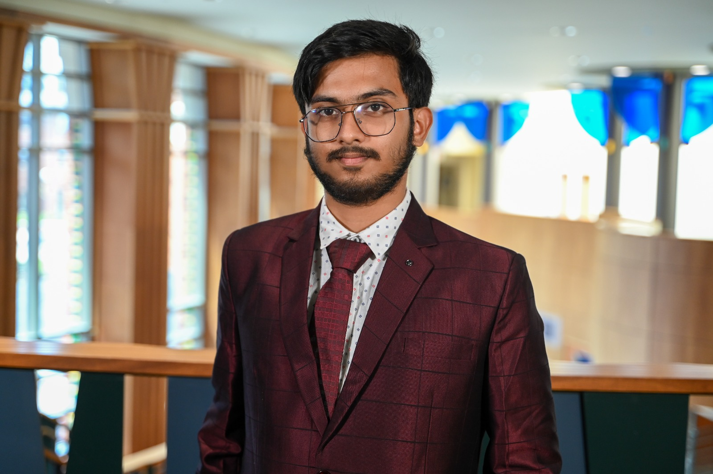

About me
I am Srijan Chattopadhyay (or, Chatterjee), a first-year PhD student in the Department of Statistics, University of Michigan, Ann-Arbor. Previously, I completed my Bachelor of Statistics (B.Stat) in 2024 and Master of Statistics (M.Stat) in 2026 at the Indian Statistical Institute (ISI), Kolkata.
In 2024, I worked in the Cancer Data Science Group at the Big Data Summer Institute, University of Michigan. My research interests include but not limited to causal inference, selective inference, randomization, and spatio-temporal statistics.
